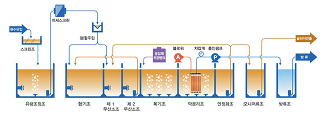

질소, 인 제거 막분리 고도처리 장치
-

-
- 2단계 탈질공정을 구성하여 완벽한 탈질 구현
- 유입 부하에 따른 탄력적 운영 (원수 분할유입)
- 질소, 인 처리효율 증가
- 잉여슬러지 발생량 저감
MBR | 공법은 질소, 인 처리를 위한 최적의 공법입니다. 원수를 형기조와 무산소조로 분할유입하여 질소, 인 처리에 필요한 유기물을 각 조에 적절히 공급, 최적의 조건을 만들어 질소 및 인의 처리를 최적화 시킨 공법입니다.
| 구분 | 유입 | 처리수 | ||
|---|---|---|---|---|
| 평균 (ppm) | 평균 (ppm) | 효율 (%) | ||
| BOD | 200.0 | ≤ 3.0 | 98.5 | |
| COD | 250.0 | ≤ 10.0 | 96.0 | |
| SS | 200.0 | ≤ 3.0 | 98.5 | |
| T-N | 40.0 | ≤ 15.0 | 62.5 | |
| T-P | 6.0 | ≤ 1.5 | 75.0 | |
| E-coli | 200,000 | N.D | 100.0 | |